close-1_2 — 1.2 km

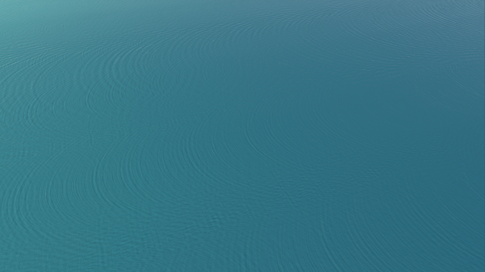
Actual Godot captures: identical camera transforms below 2800 km; the old extreme zoom requests are constrained to the new supported view. Near/far clipping differs where the new edge limit applies. Click for full resolution. Implementation, sources and limitations.
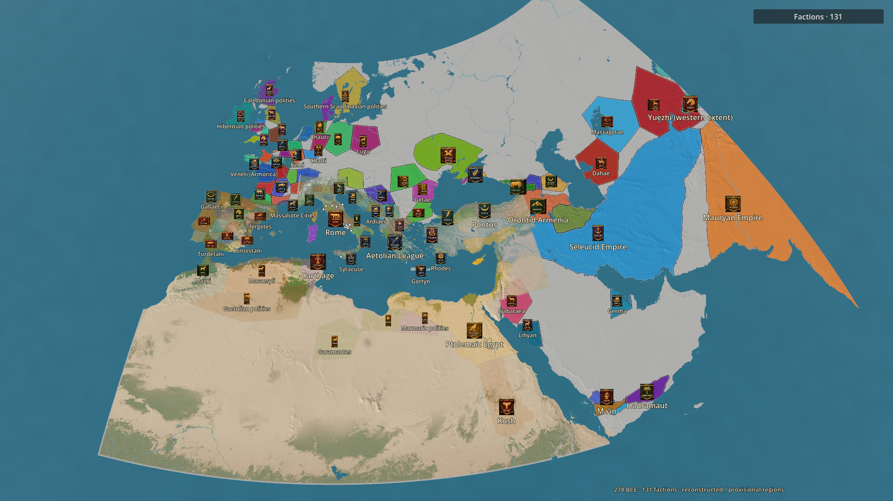
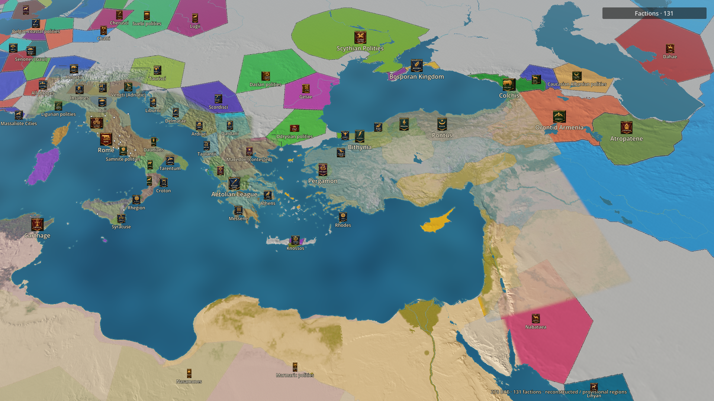


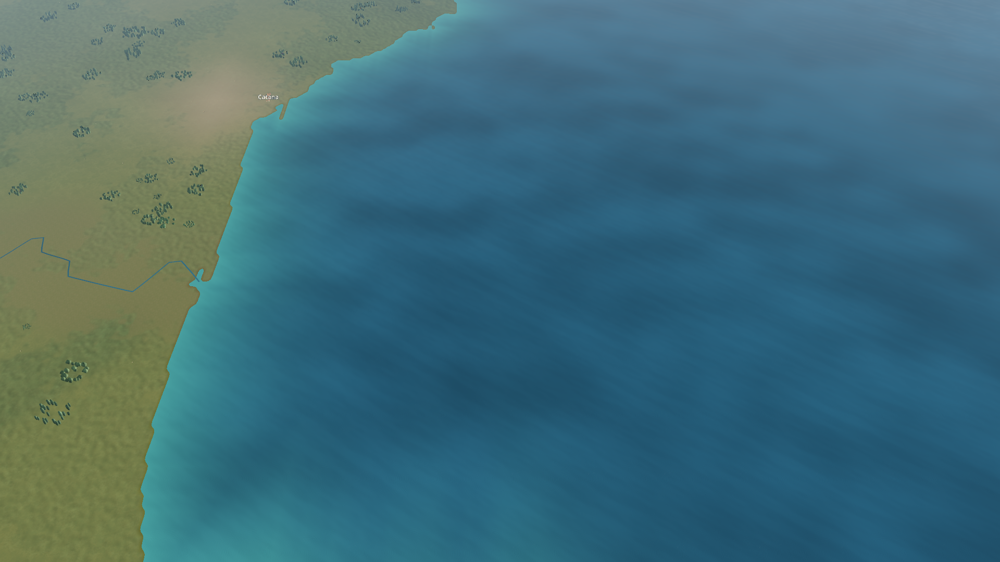
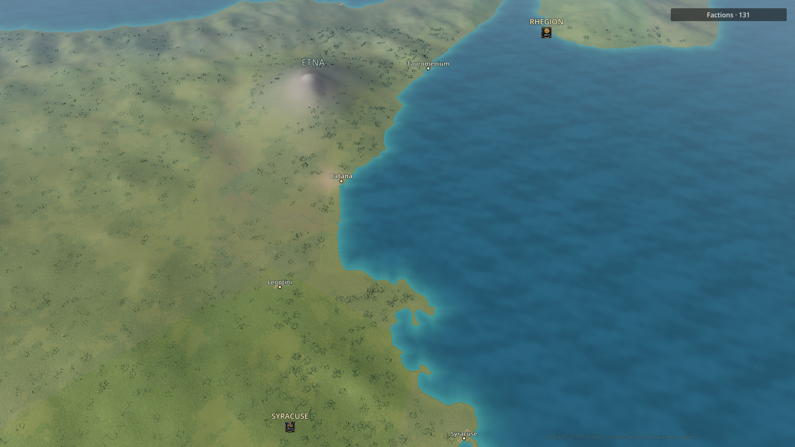
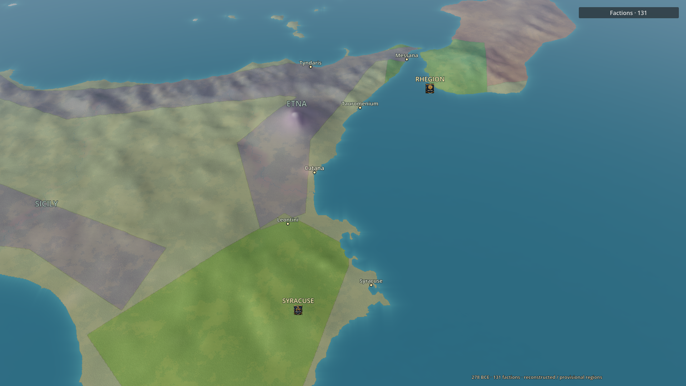
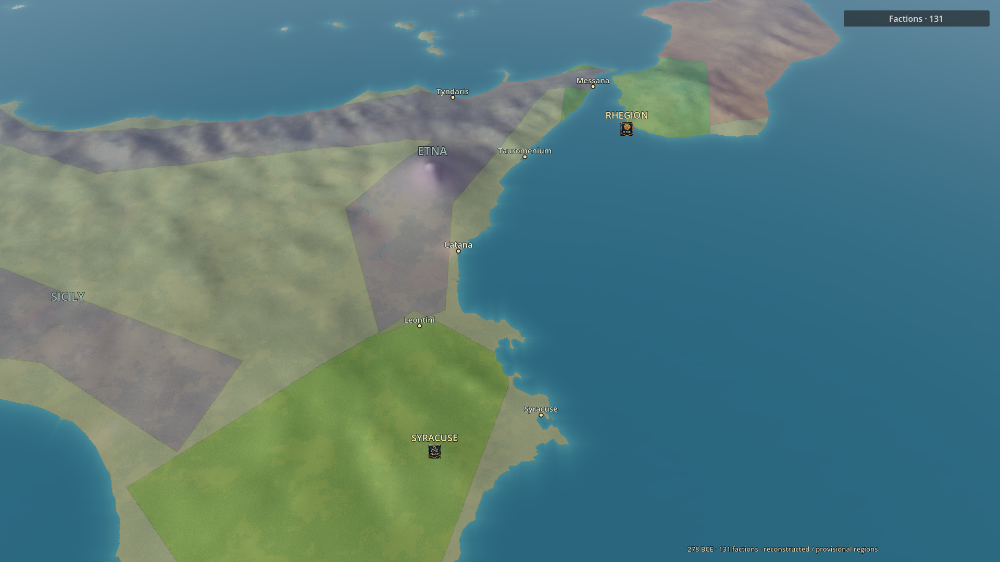
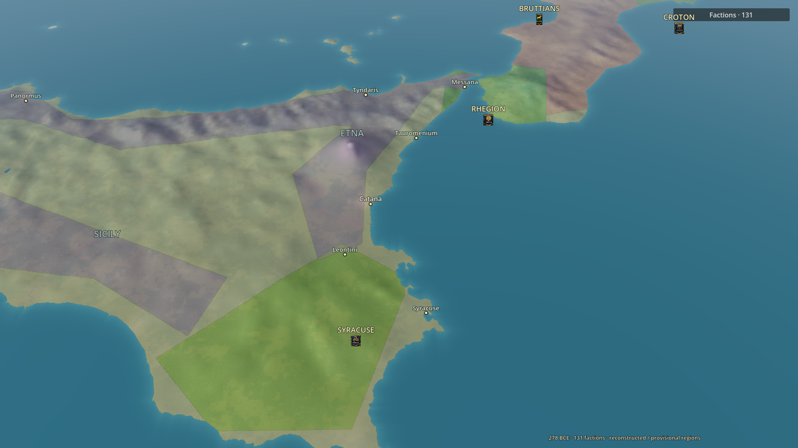
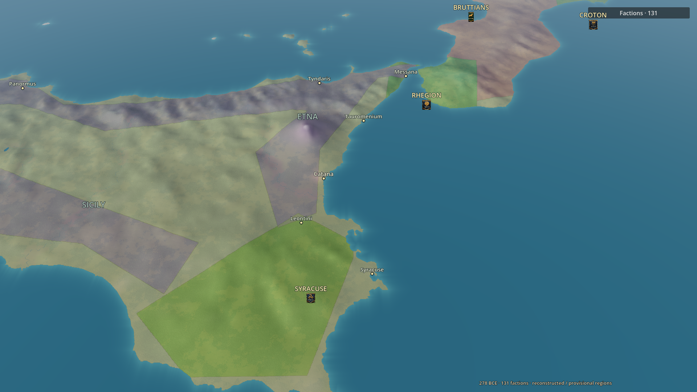
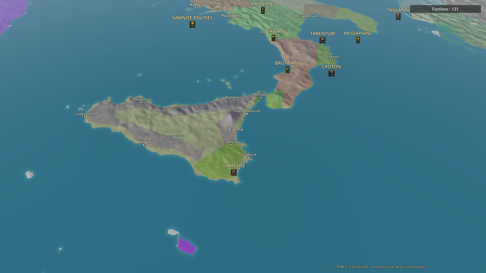
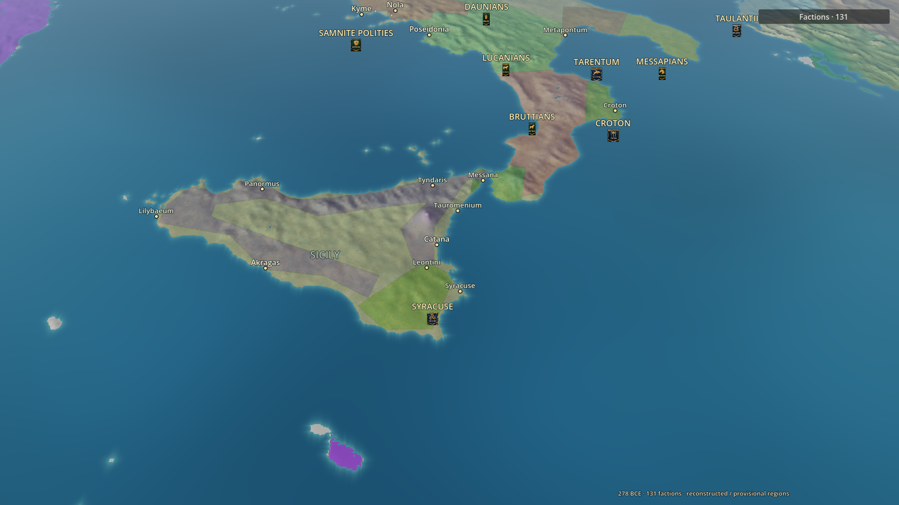
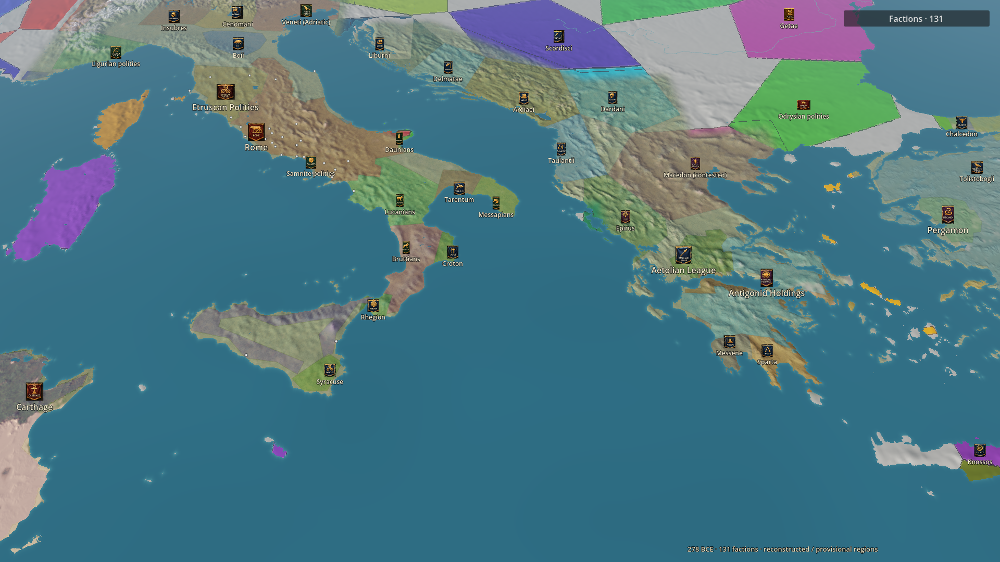
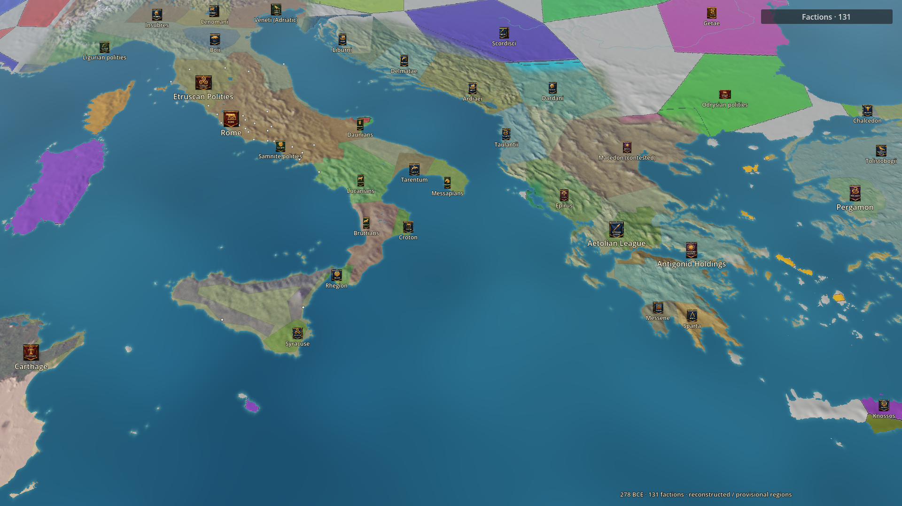
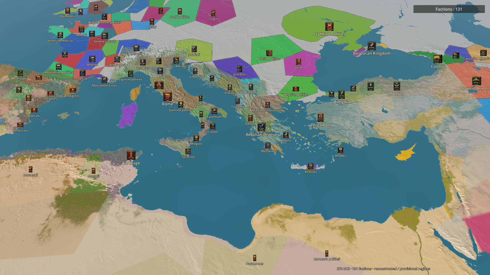
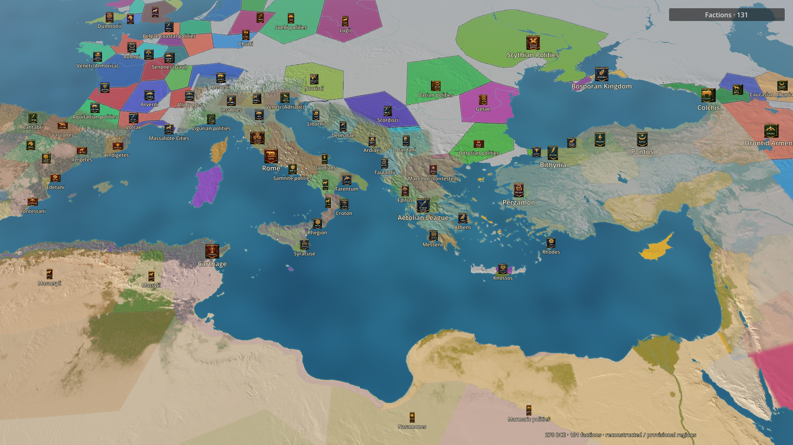
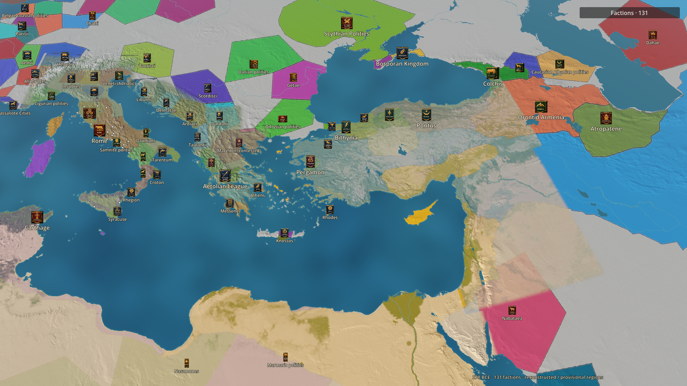
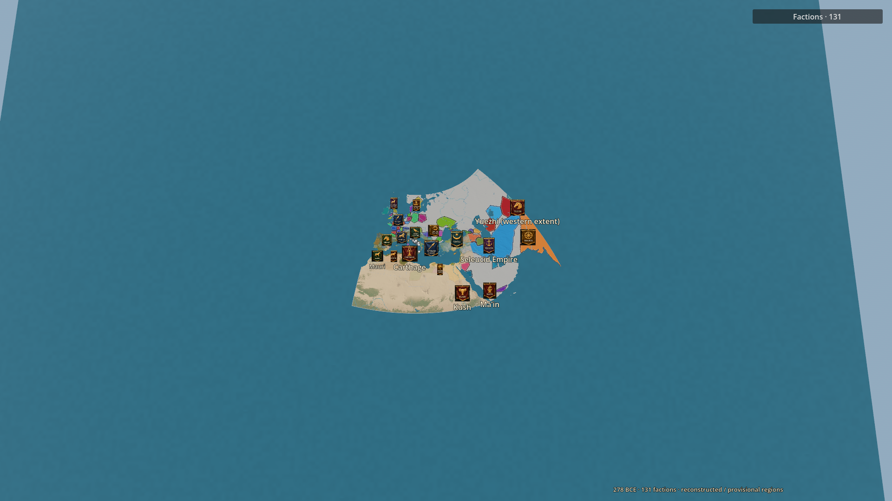